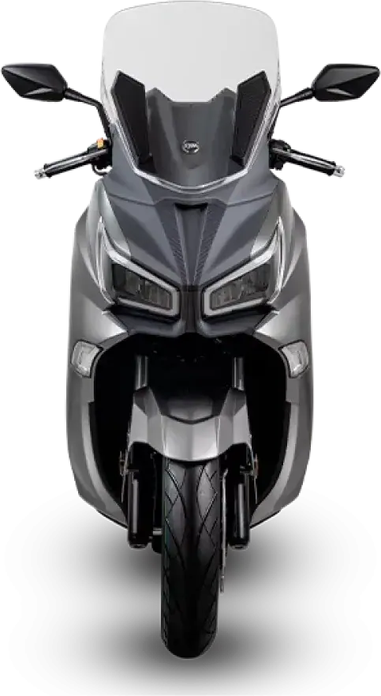
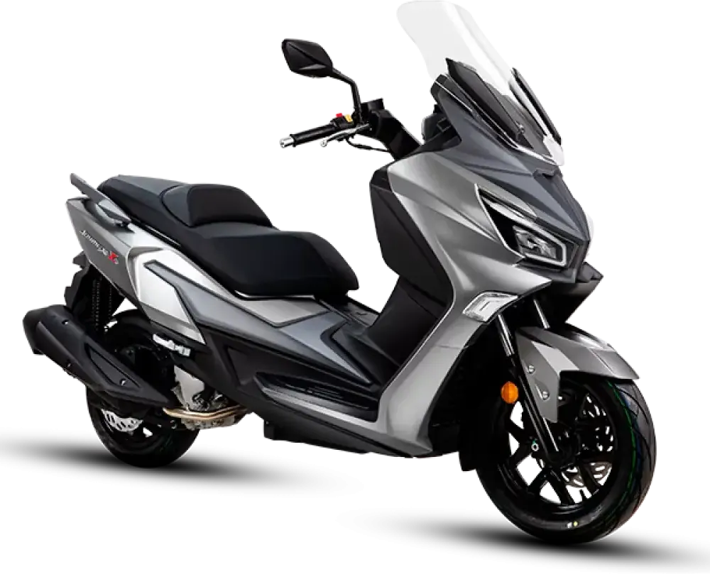
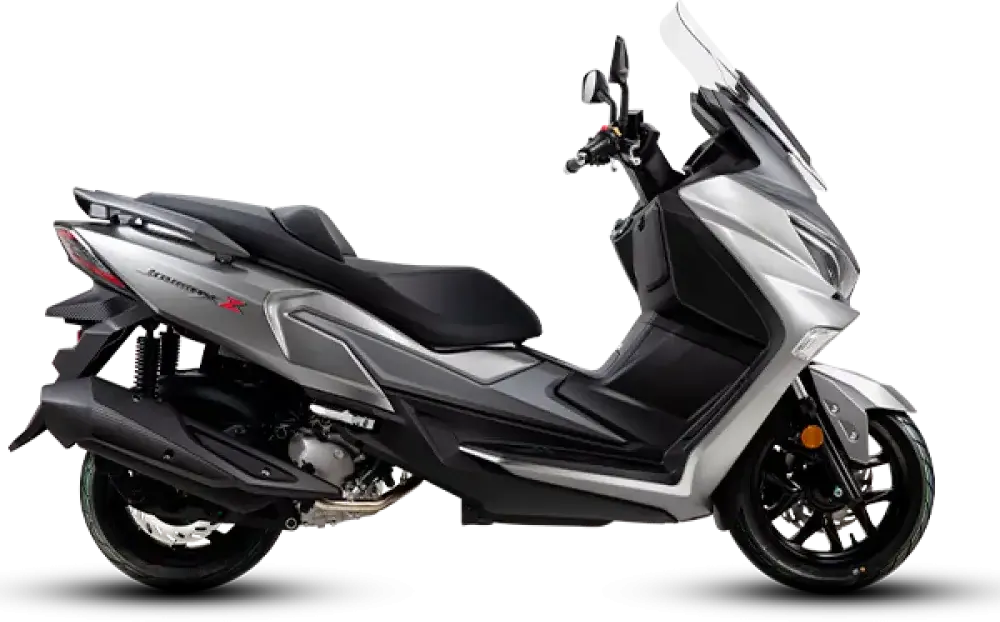

SYM
ADXTG 400
A2 400 cc · 25,7 kW · Scooter
Propuesta de OpsPilot para Expomoto Córdoba, en revisión. No es la web oficial: expomotocordoba.es



En cuanto a capacidad práctica, ofrece 45L de espacio bajo el asiento , suficiente para guardar un casco integral y un casco jet, además de un compartimento frontal y puertos de carga rápida USB y USB-C para mantener siempre tus dispositivos conectados. También cuenta con parabrisas ajustable , respaldo regulable y suspensiones ajustables en precarga para maximizar el confort en cada trayecto.
Si buscas un scooter potente, seguro y cómodo , con diseño moderno y gran autonomía, el Joymax Z 300 es tu aliado. Con la calidad y fiabilidad de SYM, este modelo redefine lo que esperas de un scooter GT.
Equipado con un completo sistema de iluminación Full LED , que mejora significativamente la visibilidad en carretera y aumenta la seguridad tanto de día como de noche.
El Joymax Z 300 cuenta con sistema de frenado ABS y control de tracción TCS para garantizar una frenada segura y estabilidad óptima en cualquier condición, mejorando la seguridad y el control del piloto.
Pantalla ajustable en altura y ángulo que mejora la eficiencia aerodinámica y protege al piloto frente al viento y agentes externos.
Asiento ergonómico y respaldo ajustable que proporciona un soporte lumbar personalizado, mejorando el confort en cualquier trayecto.
Equipado con un completo sistema de iluminación Full LED , que mejora significativamente la visibilidad en carretera y aumenta la seguridad tanto de día como de noche.
Espacioso compartimento bajo el asiento con capacidad de 45 litros , diseñado para ofrecer la máxima funcionalidad sin comprometer el diseño del vehículo. Este espacio permite alojar cómodamente dos cascos integrales , lo que lo convierte en una opción ideal tanto para uso diario como para desplazamientos más largos
Su sistema Smart Key permite encender el scooter y acceder al almacenamiento sin sacar la llave del bolsillo, ofreciendo una experiencia más fluida, segura y sin complicaciones. Además, gracias a su doble toma de carga rápida USB + USB-C , podrás mantener tus dispositivos conectados y cargados en todo momento. Funcionalidad inteligente que se adapta a tu ritmo.